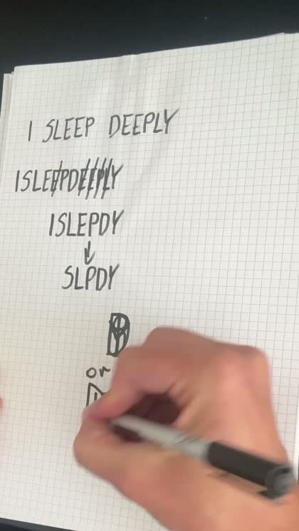

You can draw one.
Now what?
The video shows you how to make the mark. It cannot show you the three things that happen next, and those are the only three things anyone ever asks about.

Writing the sentence, striking out the repeats, dropping the vowels and folding what is left into one mark. That part is genuinely easy, and once you have watched it done you can do it tonight.
Then you are sitting there with a piece of paper and no idea what happens next.
I wanted to know whether that was just me, so I started to learn about the topic from people asking beginner questions about sigils.
These three questions below account for more than half of everything asked. These were the same questions I stuck too on.
1. Did I do it right?
This is the most asked question by a distance, and the answer surprised me.
I dig through many of posts on different forums, and nearly all of those posts are somebody photographing their first sigil with a nervous caption. In every single one of them, not one person was told their drawing was wrong. The replies are warm and unanimous. Looks good. Better than my first. That is beautiful.
There is no correct shape and no register of approved marks. Wobbly lines have never been the reason one failed.
But people are corrected, regularly, and always about the same thing.
It is never the mark. It is the sentence.
Every correction I found was aimed at the line of text written before the pen moved:
| What they wrote | What they were told |
|---|---|
| I will be calm | Present tense. Write I react calmly. |
| I want more money | Not want, not will. Write it as already true. |
| My parents are happy together | Do not aim it at other people. Point it at yourself. |
The whole test
It came from a sentence you wrote. The sentence was present tense and positive. The sentence was about you. You cannot read it in the finished mark.
Four yeses and you have a sigil. The drawing is not on that list, because the drawing is not what goes wrong.
2. How do I charge it?
Second most asked, and there are two problems tangled together inside it.
The first is that nobody explains what charging is. You finish the drawing and the next instruction is a word with no procedure attached to it.
So, plainly: charging means giving the mark one moment of your complete attention. That is the whole thing. Either intense calm or intense feeling. What does not work is the middle, where you glance at it while half thinking about dinner.
The second problem is that a lot of the older books give exactly one method for reaching that moment, and it is a private physical one that many people will simply not use. I found a nineteen year old asking a forum for any alternative at all, because every source they could find gave the same instruction and nothing else.
They do not need it, and neither do you. The best reply in that thread came from someone who has practised for twenty five years and has never once used that method.
The simplest one that works
Put the sigil in front of you, about an arm's length away, and look at it.
Let your eyes follow the lines. Two minutes is plenty. Your mind will wander, because that is what minds do. When you notice, come back to the lines. You do not have to switch the thoughts off, only let them go past.
Somewhere in there the shape usually stops looking like a drawing and starts looking like an object, and the looking stops taking effort. That is the moment. Stop there, and do not keep going to make sure.
Three words worth having
Somebody once replied to a beginner whose sigil was about staying calm in an argument, and the entire answer was: charge it calmly.
Match the charge to the wish. Nobody else makes that rule and it is the most sensible thing I found.
3. What do I do with it after?
Third most asked. It is really two questions, and the first one is easy.
Keep it or destroy it?
Ask what kind of wish it is.
A one off outcome. Something that either happens or does not: a test comes back clear, the move works out. Destroy it or hide it. Getting rid of the object makes it easier to stop thinking about the wish.
An ongoing change in you. Steadier with money, calmer in the mornings, braver about speaking up. Keep it, and keep it somewhere you will see it without thinking about it.
If you cannot decide, hide it rather than burn it. You can always burn it later.
If you are destroying it, pick an element
Almost nothing written about sigils tells you how to actually get rid of one, which is an odd gap given how often the instruction is to destroy it. Practitioners are more generous than the books:
| Element | What you do | Suits |
|---|---|---|
| Fire | Burn it in a fireproof dish | Endings, anger, anything you want gone |
| Earth | Bury it, in a plant pot or the ground | Money, health, a home |
| Water | Running water, or hold it under a tap | Grief, letting go, forgiveness |
| Air | Tear it small and scatter it outdoors | Freedom, travel, a decision made |
Nobody is checking which one you chose. What destroying it actually does is give the thing an ending, and an ending is what lets you stop turning it over.
Fire safely. A fireproof dish, away from anything else, water within reach, never left alone.
And the second half of question three
Which is the one nobody wants to hear.
Spare, who set this method down in 1913, ends his description of it mid sentence to flag one step as being of great importance. It is not the drawing. It is what comes after.
Then, and this is of great importance, forget the desire and sink the sigil in the subconsciousness.
Austin Osman Spare · The Book of Pleasure · 1913
Every practitioner who has written about this seriously says the same thing, and the forums are full of people saying it more bluntly. The hardest part is detaching from it. The hardest part is forgetting them.
And that is the one I cannot fix for you on a web page, because it is not a fact you can be told. It is a habit, and there are techniques for building it.
There is one that works the first time you try it, that requires no willpower at all, and that I have never seen published anywhere. It solves the problem by making it structurally impossible to obsess over a sigil, rather than by asking you to resist. It is the reason I wrote the book, and it is the next page.
The part I could not fit here